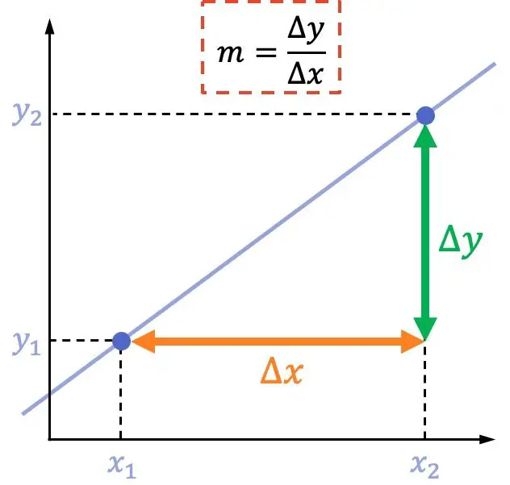
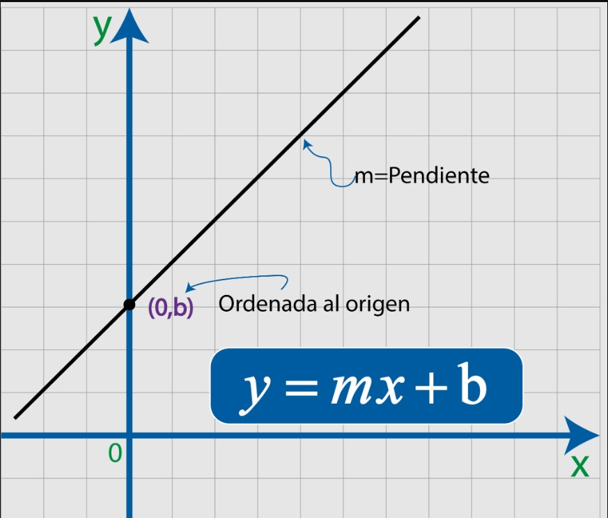
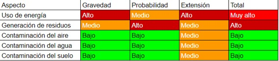
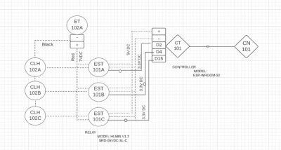

Qué es la Domótica
La domótica es el conjunto de tecnologías que permiten controlar de forma automática y remota los sistemas de una vivienda, mejorando la comodidad, la seguridad y la eficiencia energética.
Introducción al concepto de domótica y su aplicación en la automatización de viviendas utilizando ESP32, Arduino, sensores y sistemas de control y alarma.
La domótica es el conjunto de tecnologías que permiten controlar de forma automática y remota los sistemas de una vivienda, mejorando la comodidad, la seguridad y la eficiencia energética.
La domótica, un campo en rápido crecimiento, está transformando cómo interactuamos con nuestros espacios de vida y trabajo, y Colombia no es ajena a esta revolución... [1][[5]][3]. Este contexto histórico sienta las bases para nuestro proyecto: Proyecto Casa Domótica.
El campo de la domótica está en constante evolución, con nuevas tecnologías y tendencias emergiendo cada año. En 2023, varios desarrollos clave están moldeando el panorama de la domótica y la automatización residencial:
Integración de Inteligencia Artificial (IA) y el Internet de las Cosas (IoT): La fusión de la IA y el IoT está remodelando la domótica, permitiendo que los dispositivos aprendan de los comportamientos de los usuarios y reaccionen de manera proactiva a diferentes situaciones[4].
Asistentes de Voz y Procesamiento del Lenguaje Natural: Los asistentes de voz están multiplicándose rápidamente, con una población global esperada de 150 millones para este año. La tecnología detrás de estos gadgets está evolucionando rápidamente, permitiendo la integración con múltiples dispositivos y el reconocimiento de diferentes voces[5].
Computación en el Borde (Edge Computing): Esta tendencia permite que los dispositivos IoT procesen los datos generados localmente en lugar de en servidores en la nube, lo que resulta en una latencia baja, eficiencia de ancho de banda mejorada y una mejor escalabilidad para agregar más dispositivos a la red domótica[5].
Integración y Conectividad Continua: La integración y la conectividad entre dispositivos inteligentes están creciendo, permitiendo una mayor personalización y control sobre los espacios habitables[6][7].
Automatización Sostenible y Eco-amigable: La domótica puede ayudar a vivir de manera más sostenible, por ejemplo, mediante la integración de fuentes de energía verde como la solar y la mejora de la eficiencia energética[5].
Uso de Dispositivos Móviles: Se espera que la integración de dispositivos móviles para controlar diferentes aspectos del hogar continúe siendo una tendencia predominante, proporcionando una interfaz fácil de usar para los usuarios.
Realidad Aumentada (AR) y Realidad Virtual (VR): Estas tecnologías tienen implicaciones emocionantes para la domótica, como la facilitación del mantenimiento de dispositivos inteligentes y la mejora del diseño del hogar mediante la visualización de nuevos muebles y decoraciones antes de la compra[5].
Mejoras en Seguridad y Privacidad: La tecnología biométrica y los avances en la encriptación de datos y los controles de privacidad están mejorando la seguridad de los hogares inteligentes[5].
Monitoreo de Salud en el Hogar Impulsado por IA: Los dispositivos portátiles pueden rastrear datos clave de salud, emitir recordatorios para tomar medicamentos y alertar a los servicios de emergencia cuando ocurren problemas[5].
Crecimiento Continuo de la Tecnología 5G: Se espera que la tecnología 5G crezca en popularidad y sofisticación, lo que significa una conectividad aún más rápida, menor latencia y soporte para dispositivos IoT más poderosos y sofisticados[5].
Estas tendencias y tecnologías están llevando la domótica a nuevos horizontes, permitiendo una mayor automatización.
Descripción:Capturan la temperatura del entorno.
Beneficios: Facilitan la automatización de sistemas de calefacción y refrigeración, asegurando un ambiente agradable y optimizando el consumo energético.
Descripción:Utilizan tecnología infrarroja o ultrasonido para detectar movimientos.
Beneficios: Potencian la seguridad del hogar y permiten la activación automática de dispositivos como luces al detectar presencia.
Descripción: Miden la humedad del ambiente.
Beneficios: Regulan dispositivos como deshumidificadores o humidificadores para asegurar un ambiente cómodo y saludable en el hogar.
Descripción: Sensan la presencia de gases potencialmente peligrosos.
Beneficios: Elevan la seguridad del hogar al alertar sobre posibles fugas de gas.
Descripción: Convierten la luz ambiental en una señal eléctrica.
Beneficios: Automatizan la iluminación y el control de persianas, favoreciendo la eficiencia energética y la comodidad del hogar.
Descripción: Analizan parámetros como la conductividad del agua para determinar su calidad.
Beneficios: Garantizan un suministro de agua saludable y libre de impurezas.
El material eléctrico es esencial para la construcción y experimentación en proyectos de domótica y electrónica. A continuación, se describen algunos de los materiales eléctricos comunes y sus aplicaciones:
Los jumpers son cables pequeños que se utilizan para:
Arduino es una plataforma de desarrollo de código abierto que se utiliza para:
El ESP32 es un microcontrolador de bajo costo y bajo consumo de energía que se utiliza para:
Los optoacopladores son dispositivos que se utilizan para:
Las resistencias son componentes eléctricos que se utilizan para:
Los capacitores almacenan energía eléctrica y se utilizan para:
Las baterías de 9 voltios son fuentes portátiles de energía eléctrica que se utilizan para:
Un cargador para Arduino suele ser un adaptador de corriente continua (DC) que se utiliza para:
Los sensores analógicos desempeñan un papel crucial en sistemas domóticos, proporcionando información esencial del entorno que luego se puede utilizar para controlar otros dispositivos. Aquí se explican algunos aspectos clave del funcionamiento de los sensores analógicos, centrándose en la resolución, la escalización y la aplicación de la fórmula de la pendiente en la escalización:
La resolución de un sensor se refiere a la menor variación en la magnitud medida que el sensor puede detectar. La resolución de un sensor con una salida digital suele ser la resolución numérica de la salida digital.
La escalización es el proceso de convertir la salida cruda de un sensor analógico en una unidad de medida comprensible. Por ejemplo, si un sensor proporciona una salida de voltaje, la escalización ayudaría a convertir ese voltaje en grados Celsius o Fahrenheit.
La fórmula de la pendiente \( m = \frac{(Y2 - Y1)}{(X2 - X1)} \) se utiliza para determinar el factor de escala en la escalización. Por ejemplo, en un sensor con una salida de 0 a 10V DC para una gama de 0 a 100 ft WC, se pueden utilizar dos puntos de la curva de respuesta del sensor (0, 0) y (10, 100) para calcular el factor de escala o \( m \):
\[ m = \frac{(100 - 0)}{(10 - 0)} = 10 \]
Esta relación lineal entre la salida del sensor y la magnitud medida permite escalar la salida del sensor a una unidad de medida comprensible.
En la práctica, la escalización se realiza programando una ecuación de escalización en un Controlador Lógico Programable (PLC) para que, por ejemplo, una corriente de 4 mA se registre como 0 GPM (Gallons Per Minute), y una corriente de 20 mA se registre como 700 GPM. Los valores crudos proporcionados por el conversor analógico a digital (ADC) del sensor se utilizan para definir el dominio de esta escala lineal.
La escalización de una señal de entrada analógica no siempre es sencilla. Por ejemplo, en un diseño de cadena de señal reciente que necesitaba escalar una señal de +/-10 V a un rango de 0 a [5].5 V para coincidir con todas las demás señales dirigidas al conversor analógico a digital (ADC), se tuvieron que considerar varios aspectos para lograr una escalización precisa.
Estas explicaciones proporcionan una comprensión clara sobre cómo los sensores analógicos funcionan y cómo la resolución y la escalización son aspectos cruciales para interpretar y utilizar la información proporcionada por estos sensores en aplicaciones de domótica.
En nuestro proyecto de domótica, los microcontroladores ESP32 y Arduino Uno se integran para gestionar y procesar las señales provenientes de diversos sensores. Para la correcta interpretación de las señales analógicas adquiridas de los sensores LM35 y MQ-6, es esencial llevar a cabo un proceso de escalización. A continuación, se presenta una adaptación del código C++ para Arduino, optimizado para su implementación en el proyecto:
Para descargar el código de escalización de señales para Arduino, haz clic en el siguiente enlace:Descargar Código Arduino.
#define.VREF) de 5.0V para la conversión analógica a digital.setup, se inicia la comunicación serial a una tasa de baudios de 9600 para la depuración y monitoreo.loop, se realizan las lecturas analógicas de los sensores LM35 y MQ-6, seguido por la escalización de la señal del sensor LM35 para obtener la temperatura en grados Celsius. También se aplica un filtro de paso bajo para suavizar las lecturas de temperatura.Este código proporciona una estructura robusta y eficaz para la adquisición y procesamiento de señales analógicas provenientes de los sensores LM35 y MQ-6, facilitando así la integración y comunicación dentro de tu sistema domótico.
Simulacion Inicial sensores analogicos.
Un sistema de control es un conjunto de elementos que permiten automatizar una tarea o proceso. En el caso de la domótica, un sistema de control permite automatizar las funciones de un hogar o edificio, como el encendido y apagado de luces, la apertura y cierre de puertas, el control de la climatización, etc.
En el ámbito de la domótica, el control centralizado y la comunicación entre dispositivos es fundamental para crear sistemas inteligentes y eficientes. Los microcontroladores ESP32 y Arduino, junto con una variedad de sensores, ofrecen un vasto potencial para desarrollar soluciones domóticas avanzadas que mejoren la calidad de vida de los habitantes, proporcionando comodidad y seguridad.
Los microcontroladores como ESP32 y Arduino Uno permiten la integración y gestión de diversos sensores y actuadores en un entorno doméstico. La posibilidad de programar lógicas específicas y comunicarse con otros dispositivos expande las funcionalidades del hogar, permitiendo desde el control de iluminación y climatización hasta sistemas de seguridad avanzados.
Se puede establecer una comunicación cableada entre el Arduino (esclavo) y el ESP32 (maestro) utilizando protocolos como I2C o UART, permitiendo una transmisión de datos confiable y en tiempo real entre estos dispositivos.
El ESP32 sobresale por su capacidad de conectarse a redes WiFi y Bluetooth, lo que permite una comunicación inalámbrica con otros dispositivos y plataformas de control domótico como Home Assistant. Esto facilita la monitorización y control remoto del sistema domótico.
En un sistema domótico diseñado con los componentes ya mencionados, se podría implementar una arquitectura donde el ESP32 actúa como un controlador maestro que gestiona la lógica del sistema y se comunica con el Arduino Uno esclavo, que a su vez está conectado a los sensores mencionados. La comunicación entre el ESP32 y el Arduino puede establecerse mediante una conexión cableada, asegurando una transmisión de datos robusta.
La ESP32, con su conectividad WiFi y Bluetooth, puede conectar el sistema domótico a una red local o a plataformas de control y monitorización en la nube. Por ejemplo, se podría utilizar Home Assistant para proporcionar una interfaz de usuario amigable y recibir notificaciones en tiempo real de los eventos detectados por los sensores.
Las alarmas y notificaciones podrían gestionarse a través de una aplicación móvil, permitiendo a los usuarios interactuar con el sistema domótico de manera remota, ya sea para monitorear las condiciones ambientales, recibir alertas de seguridad, o controlar otros dispositivos en el hogar como luces y electrodomésticos.
Con esta configuración, se consigue un sistema domótico flexible, escalable y con múltiples funciones que atienden tanto la seguridad como la comodidad de los habitantes, al mismo tiempo que se facilita la monitorización y el control remoto del entorno doméstico.
Indicadores Clave de Rendimiento (KPIs): Los KPIs son métricas que ayudan a monitorear y medir el rendimiento y la efectividad del Sistema de Gestión de Calidad (QMS). La norma ISO 9001:2015 requiere que tu empresa determine qué necesita monitorear y medir, cómo y cuándo hacerlo, y analizar y evaluar los resultados【8】.
Matrices de Calidad: Aunque no se ha encontrado una descripción detallada sobre matrices específicas, la ISO 9001 propone un Sistema de Gestión de Calidad (QMS) bien definido basado en un marco que integra conceptos, principios, procesos y recursos relacionados con la calidad, ayudando a las organizaciones a alcanzar sus objetivos【9】.
Ejemplo Matriz Resultante
Similar a la ISO 9001, pero enfocada en la gestión ambiental. Ambas normas se refieren al proceso de cómo se presta un servicio/producto, en lugar del servicio/producto en sí. La certificación se realiza por organizaciones de terceros, no directamente por ISO【10】.
La Matriz de Leopold se utiliza para identificar las interacciones entre las acciones humanas y los efectos ambientales en un proyecto. Esto incluye la valoración de acciones que pueden afectar al proyecto y la asignación de valores a esas interacciones. La normativa ISO 14000, específicamente la ISO 14001, se relaciona con la gestión y evaluación de impactos ambientales, lo que se alinea con la aplicación de la Matriz de Leopold para identificar y gestionar aspectos e impactos ambientales【10】.
ISA desarrolla estándares en áreas clave como seguridad, integración empresarial, comunicaciones inalámbricas, instrumentación, medición y control. También está estableciendo estándares para la ciberseguridad en aplicaciones industriales【11】.
Los estándares de ISA sirven como guías de buenas prácticas que dirigen el diseño, implementación, operación y mantenimiento adecuados del sistema, promoviendo la fiabilidad, seguridad y operacionalidad de las plantas【12】.
Por ejemplo, la norma ISA-62443-2-1-2009 establece un programa de seguridad para sistemas de automatización y control industrial, mientras que la ISA-TR62443-2-3-2015 aborda la gestión de parches en el entorno IACS【13】.
Adherencia a Normas Internacionales: Al optar por adherirse a las normas ISO 9001 y ISO 14000 desde el inicio, se ha establecido un compromiso sólido hacia la calidad, la satisfacción del cliente y la gestión ambiental. Esto no solo mejora la percepción y la confianza en el sistema domótico que estamos desarrollando, sino que también facilita la adopción de mejores prácticas que pueden ser beneficiosas en el largo plazo.
Seguridad y Fiabilidad con ISA: Las normas ISA nos ofrecen un marco para asegurar la seguridad y la fiabilidad en los sistemas de control automático, lo cual es crucial en la domótica, donde la seguridad de los datos y la operación confiable del sistema son imperativos. Al seguir las guías de ISA, estamos estableciendo una base sólida para la seguridad y la fiabilidad del sistema, aspectos que son cruciales para la aceptación y el éxito del proyecto.
Estado Actual del Proyecto: Hasta la fecha, se ha dado inicio al desarrollo del prototipo de casa y sistemas asociados, incorporando tecnologías como Arduino, ESP y diversos sensores. Aunque este es un avance significativo, es solo la punta del iceberg en términos de lo que el proyecto puede lograr en el futuro. La domótica tiene el potencial de revolucionar la manera en que interactuamos con nuestros entornos, brindando una vida más cómoda, segura y eficiente.
Avances Normativa ISA
Perspectivas Futuras: Con la infraestructura y las normativas ya en su lugar, se encuentra en una posición ventajosa para explorar y expandir el alcance del proyecto. A medida que el proyecto evolucione, la integración de más características, tecnologías emergentes y la adherencia continua a las normativas ISO e ISA permitirá un desarrollo sostenible y la mejora continua del sistema domótico. Esto, a su vez, puede conducir a una mejor eficiencia energética, operación segura y satisfacción del cliente.
Preparación para Escalabilidad y Mejoras Futuras: La planificación cuidadosa y la adherencia a las normas internacionales desde el inicio proporcionan un camino claro hacia la escalabilidad y la mejora. Con cada etapa de desarrollo, el proyecto puede evolucionar para incorporar nuevas funcionalidades, mejorar la interfaz de usuario y optimizar el rendimiento del sistema, manteniendo siempre un alto estándar de calidad y seguridad.
La integración de las normas ISO e ISA no solo refuerza la calidad y la seguridad del proyecto actual, sino que también establece una plataforma sólida para la expansión y la innovación futura en nuestro sistema domótico. A medida que el proyecto avance, la continua adherencia a estas normativas facilitará el cumplimiento de los objetivos a largo plazo y la satisfacción de los stakeholders involucrados.